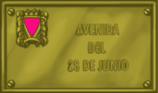

Espacios para la
diversidad
28 de junio de 1969:
La revuelta de Stonewall (Nueva York)
Nace el orgullo GLBT
Un hecho de capital importancia tuvo lugar el 28 de junio de 1969, un hecho que marca un antes y un después para el colectivo GLBT. Ese día, la policía, siguiendo una tradición de control y hostigamiento contra transexuales, lesbianas y gais -pese a estar oficialmente prohibidas las redadas- entró en el pub Stonewall, uno de los frecuentados por público GLBT, con el pretexto de una falta de permiso de los dueños para vender alcohol. En aquella época la gente no había desarrollado una conciencia de oposición y resistencia a estos abusos y, sin embargo, aquel día la gente se rebeló. El resultado fueron varios detenidos que acabaron en comisaría, mientras otra gente protestaba en el exterior del local. Al día siguiente se produjeron disturbios en toda la zona gay de la ciudad en protesta por estos acontecimientos. Durante los cuatro días siguientes, las barricadas fueron continuas y en semanas sucesivas las acciones continuaron, dificultando notablemente a la policía el control de la zona. La necesidad de organizar y preparar estas protestas llevó a la creación del Gay Liberation Front (GLF). Nacía así el movimiento GLBT moderno.
Del mismo modo que los afronorteamericanos se estaban radicalizando y algunos sectores abandonaban la lucha pacífica contra la discriminación, apareciendo grupos más radicales como Los Panteras Negras, transexuales, lesbianas y gais pasaron también a la ofensiva. De repente, ser gay dejó de ser un motivo de vergüenza interior para convertirse en un elemento de orgullo y la homosexualidad comenzó a reivindicarse abiertamente. La consigna era "salir", darse a conocer públicamente como gay. Comienza así el período del "orgullo gay" o "gay power". En realidad se estaba copiando la fórmula del "black power" que el movimiento negro por los derechos civiles desarrollaba en aquel momento en los Estados Unidos.
 Desde aquella fecha -que pasó a convertirse en una cita reivindicativa mundial- el movimiento transgailésbico -GLBT- comenzó a recorrer un camino nuevo. En el ámbito occidental, poco a poco, se fueron ganando importantes batallas a la homofobia legal, médica y social. Así, la homosexualidad fue paulatinamente despenalizándose en todos los países, la desmedicalización, que se inició en EEUU a partir de 1973, se fue imponiendo en el estamento médico, hasta que la OMS -Organización Mundial de la Salud- retiró la homosexualidad de su catálogo de enfermedades mentales a principios de los años noventa. Con el nuevo milenio, las parejas de gais y de lesbianas son reconocidas legalmente en la mayor parte de los países, incluso como matrimonios (Holanda, Bélgica, España...).
Desde aquella fecha -que pasó a convertirse en una cita reivindicativa mundial- el movimiento transgailésbico -GLBT- comenzó a recorrer un camino nuevo. En el ámbito occidental, poco a poco, se fueron ganando importantes batallas a la homofobia legal, médica y social. Así, la homosexualidad fue paulatinamente despenalizándose en todos los países, la desmedicalización, que se inició en EEUU a partir de 1973, se fue imponiendo en el estamento médico, hasta que la OMS -Organización Mundial de la Salud- retiró la homosexualidad de su catálogo de enfermedades mentales a principios de los años noventa. Con el nuevo milenio, las parejas de gais y de lesbianas son reconocidas legalmente en la mayor parte de los países, incluso como matrimonios (Holanda, Bélgica, España...).
El 28 de junio es una fecha histórica que marca un hito en la lucha por la dignidad de millones de lesbianas, gais, bisexuales y transexuales y Stonewall es el nombre que va íntimamente ligado a esa lucha. Son dos nombres para el homenaje, dos nombres que queremos mantener vivos en nuestra sociedad y que esperamos ver también en sus espacios públicos.